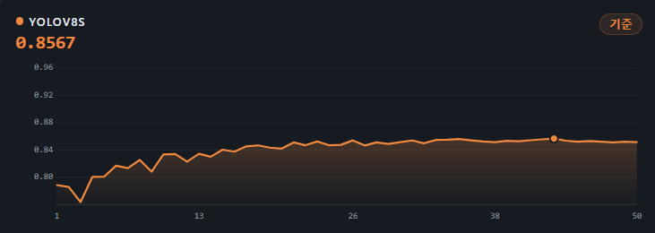
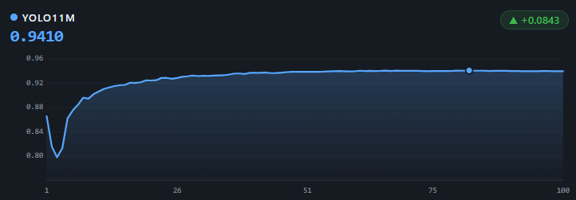
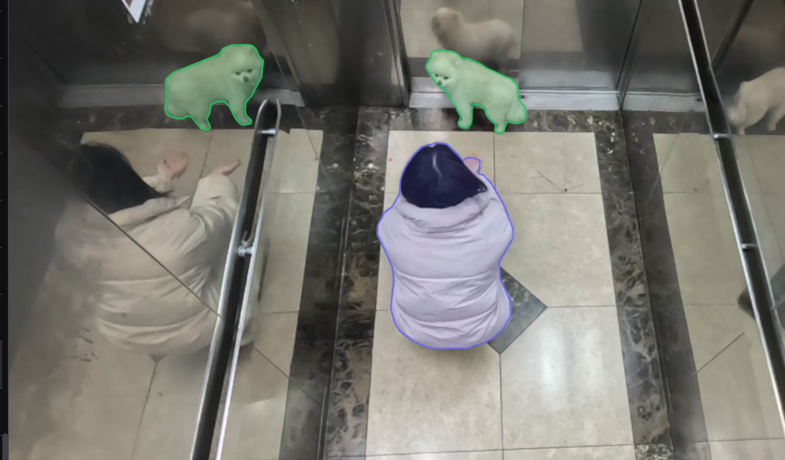
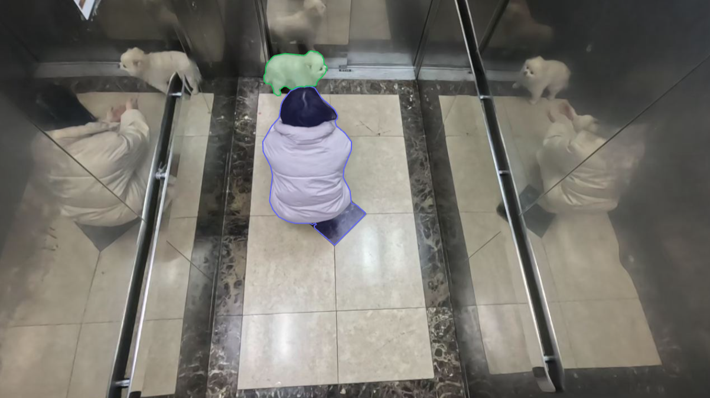
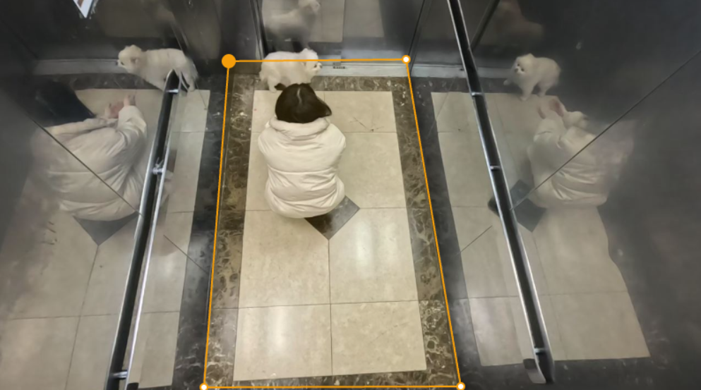

← 프로필로 돌아가기
Project 01 · 엘리베이터 제조사向
CCTV 자동 어노테이션 시스템
YOLO11 + SAM2 기반 수동 어노테이션 자동화 · 단독 개발 (기획·ML·Backend·Frontend)
계약 조건상 발주처명은 비공개이며, 업종만 표기합니다.
01배경 & 목표
엘리베이터 CCTV 영상에서 사람·반려동물을 수동으로 라벨링하는 작업이 심각한 병목이었습니다. 수천 장 이상의 이미지에 사람이 직접 라벨을 붙이는 데 과도한 시간이 소요됐습니다.
- YOLO11 + SAM2 기반 웹 자동 어노테이션 플랫폼 구축
- 웹 UI에서 검토·보정한 어노테이션을 누적해 실시간 파인튜닝
- 프로젝트별 최적 모델을 선택해 추론 서버에 동적 로드
02모델 개선
1차로 YOLO 단독(YOLO8 파인튜닝)으로 시도했으나 마스크가 부정확했습니다 (예: 사람과 반려동물 마스크 겹침). 픽셀 수준 정밀도를 위해 SAM2를 도입해 YOLO bbox → SAM2 마스크 정제 파이프라인으로 전환했습니다.

BEFORE — YOLO8 파인튜닝 (mAP50-95 0.86)

AFTER — YOLO11 + SAM2 (mAP50-95 0.94)
※ 두 수치 모두 동일 조건 상대 비교 기준입니다. 이 val 자체의 데이터 누수 발견 및 재검증(0.8366)은 아래 "성과" 항목과 추론 최적화 & 검증셋 무결성 페이지를 참고하세요.
03트러블슈팅 — 거울 반사 오탐지
엘리베이터 내부 거울에 비친 반려동물이 실제 객체로 인식되어 이중 탐지가 발생했습니다.
1. 하드코딩 좌표
거울 위치의 픽셀 좌표를 직접 지정해 해당 범위 탐지 무시 — 카메라 재설치 시마다 좌표를 다시 잡아야 해 확장성 없음
2. Y좌표 중복 제거
같은 Y좌표 대역에 bbox가 2개 이상 겹치면 하나를 제거 — 실제 객체가 우연히 겹치는 경우 오삭제 위험
3. 2D 거리 기반 제거
객체 간 거리로 반사체 여부 추정 — 거울까지의 거리가 카메라 각도마다 달라 일반화 실패
4. ROI 지정 방식 (최종 채택)
사용자가 웹 UI에서 실제 탐지 구역을 다각형으로 직접 지정. 카메라 환경이 달라져도 ROI 재설정만으로 즉시 대응 가능한 구조로 일반화.

BEFORE — 반사체 이중 탐지

AFTER — ROI 적용, 오탐 완전 제거

웹 UI에서 다각형으로 실제 탐지 구역을 지정하는 ROI 설정 화면
04성과
⚠️ 정정 — 초기 mAP50 99.1%는 부풀려진 수치였습니다
- 검증셋이 클립이 아닌 프레임 단위로 무작위 분할되어 있어, val 클립 238개 중 238개(100%)가 train에도 존재하는 데이터 누수가 있었습니다.
- 미학습 클립 352개(20,791장)로 재구성한 클린 홀드아웃 기준, 실제 성능은 mAP50-95(B) 0.8366입니다.
- 발견 과정과 재검증 전체 내용은 추론 최적화 & 검증셋 무결성 페이지에서 확인하실 수 있습니다.